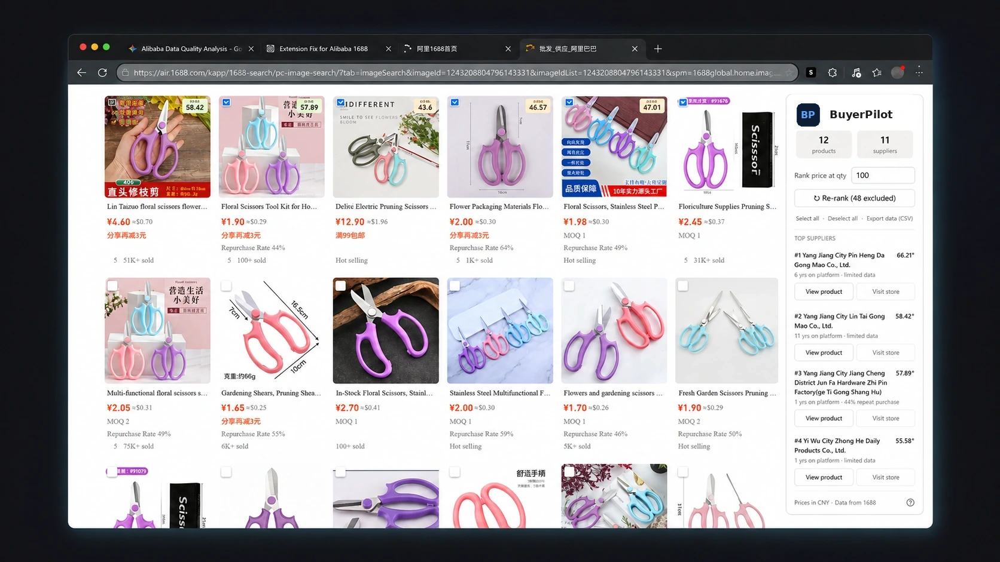
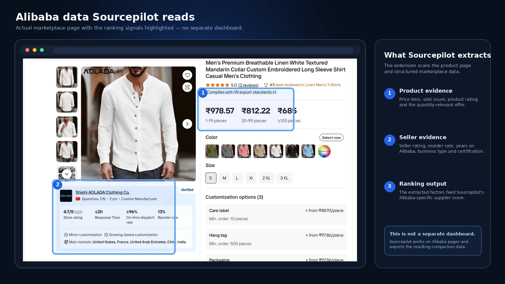
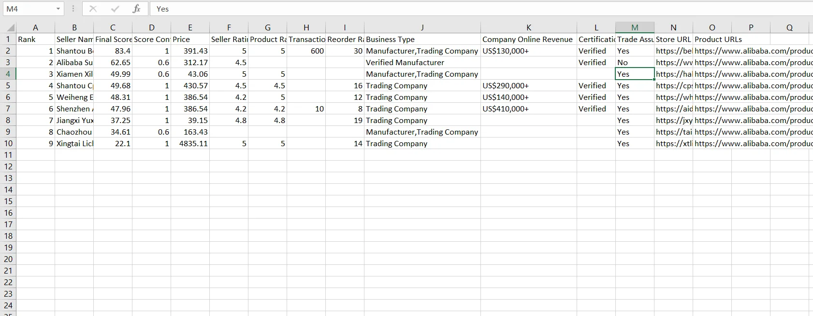

Real walkthrough
BuyerPilot from product selection to ranked suppliers
A complete real-screen demonstration with narration. See how BuyerPilot turns marketplace listings into a structured supplier shortlist.
Open the full tutorial centre →BuyerPilot selects, scans, automatically deduplicates and ranks suppliers using quantity-aware pricing, ratings, seller tenure, repeat-purchase signals, business information and marketplace verification—directly on the pages you already use.

Actual marketplace workflow. The panel stays on the Alibaba or 1688 page and can be moved anywhere on screen.
Install BuyerPilot from the Chrome Web Store, Microsoft Edge Add-ons, or Mozilla Firefox Add-ons.
BuyerPilot gathers marketplace data, ranks suppliers, and keeps the result attached to the page you are researching.

Open full-size image ↗Choose relevant listings, set the ranking quantity, and review the strongest suppliers in one movable panel.

Open full-size image ↗The highlighted areas show the actual Alibaba product and seller signals BuyerPilot collects before calculating its Alibaba-specific supplier ranking.

Open full-size image ↗Export the underlying data to Excel or Google Sheets so you can filter, audit, share and preserve your sourcing work.
Watch BuyerPilot working on a real marketplace screen—from selecting products and ranking suppliers to reviewing the final shortlist.
A complete real-screen demonstration with narration. See how BuyerPilot turns marketplace listings into a structured supplier shortlist.
Open the full tutorial centre →BuyerPilot turns marketplace data into a structured shortlist while keeping you in control of which products are compared.
Checkboxes appear on product cards so irrelevant styles, materials or offers can be excluded before ranking.
Use the price tier applicable to your planned order quantity instead of blindly selecting the lowest advertised variation.
Multiple products from the same seller are consolidated automatically so one supplier cannot occupy several ranking positions through duplicate listings.
Alibaba and 1688 use independent extraction, ranking factors and export fields instead of forcing both marketplaces into one model.
When a marketplace asks for CAPTCHA or browser verification, scanning pauses so you can complete it manually before restarting.
Pro users can download rankings and the supporting supplier data for permanent comparison, audit and team sharing.
Open an Alibaba or 1688 keyword or image-search results page as you normally would.
Keep the products that match your requirement, choose the order quantity, and run the ranking.
Inspect top suppliers in the panel, visit stores, or export the complete comparison file on Pro.
BuyerPilot uses available marketplace evidence and displays score confidence when data is incomplete.
Weights differ by marketplace because Alibaba and 1688 expose different supplier signals.
Uses supplier and product data available across Alibaba pages and embedded marketplace information.
Uses 1688-specific factory, merchant and repeat-purchase signals without mixing Alibaba fields into the calculation.
Score confidence reflects how much weighted supplier information was available for the comparison, helping you distinguish a strong evidence-backed score from a partial-data result.
Test Standard ranking for seven days, then choose the plan that matches your usage and export needs.
For individual buyers who need reliable rankings during regular product research.
For serious sourcing research, ongoing comparisons and permanent supplier records.
One payment for buyers who want permanent access to the current BuyerPilot product.
Launch prices are introductory and may change in the future. Taxes may be added by the payment provider where required.
BuyerPilot began as a practical solution to a familiar sourcing problem: opening product after product, copying scattered supplier information, and trying to compare businesses that present data differently across Alibaba and 1688.
The extension was built to collect those signals, keep Alibaba and 1688 logic independent, and turn selected listings into a structured shortlist. It completes the time-consuming first-stage comparison and turns marketplace signals into a practical evidence-based shortlist. Buyers can then focus their final checks on the strongest candidates instead of starting from dozens of unstructured listings.
BuyerPilot helps buyers structure the first stage of supplier research on Alibaba and 1688. It is useful when you need to compare manufacturers, trading companies, marketplace history, quantity-aware prices and other available supplier signals before samples and final due diligence.
BuyerPilot uses separate extraction and processing for Alibaba and 1688. These focused guides explain what the extension reads, how duplicate suppliers are handled and how the final shortlist is produced.
BuyerPilot is designed to identify and rank the strongest suppliers using the marketplace information available during the scan. It completes the time-consuming comparison work and gives you a highly useful, evidence-based shortlist. Before placing a final order, confirm current pricing, specifications, samples and commercial terms directly with the selected supplier.
No. Alibaba and 1688 expose different supplier fields, so BuyerPilot keeps their extraction, ranking and CSV export logic separate.
When several selected product listings belong to the same seller, BuyerPilot consolidates them into one supplier record before ranking. The supplier keeps its relevant product links, but repeated listings cannot fill multiple positions in the final shortlist.
Free Trial and Starter include Standard ranking. Price Focused, Quality Focused and complete CSV export are available on Pro and Founder Lifetime. Locked options remain visible in the extension so the upgrade requirement is clear.
BuyerPilot does not bypass verification. Scanning pauses, the affected page remains available, and you can complete the marketplace verification manually before restarting the ranking process.
The CSV contains the supplier intelligence behind the final rank: prices, ratings, tenure, business type, marketplace status, repeat-purchase data, confidence and source links. It lets you audit the comparison, keep permanent sourcing records and share research outside the browser.
Score Confidence shows how much of the weighted ranking data was actually available for that supplier. A lower-confidence result may still be useful, but it should be reviewed more carefully.
No. BuyerPilot is an independent browser extension and is not endorsed by, operated by or affiliated with Alibaba.com or 1688.com.
BuyerPilot supports Google Chrome, Microsoft Edge and Mozilla Firefox on desktop. Use the browser section above for the official store links as each listing becomes available.
Use up to 50 Standard ranking sessions, then upgrade to Pro when you need CSV export, Price Focused or Quality Focused ranking.